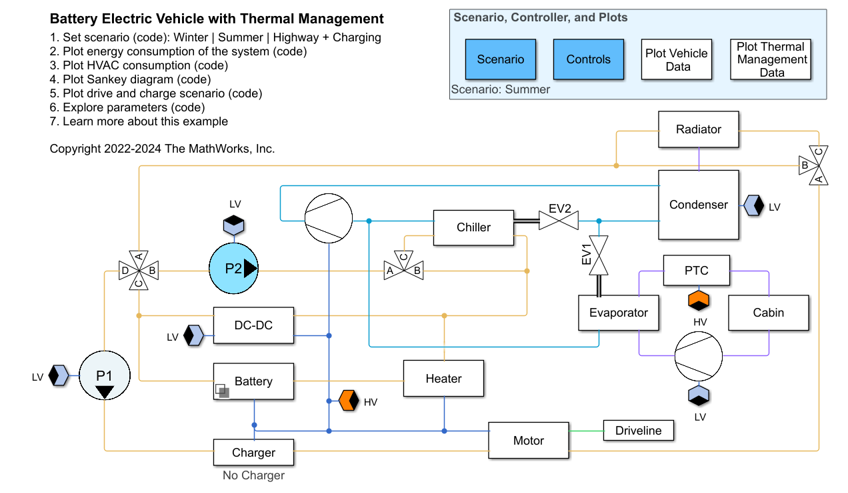
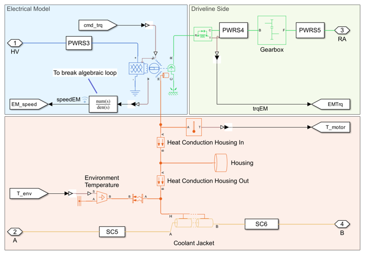
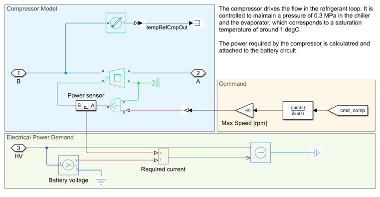
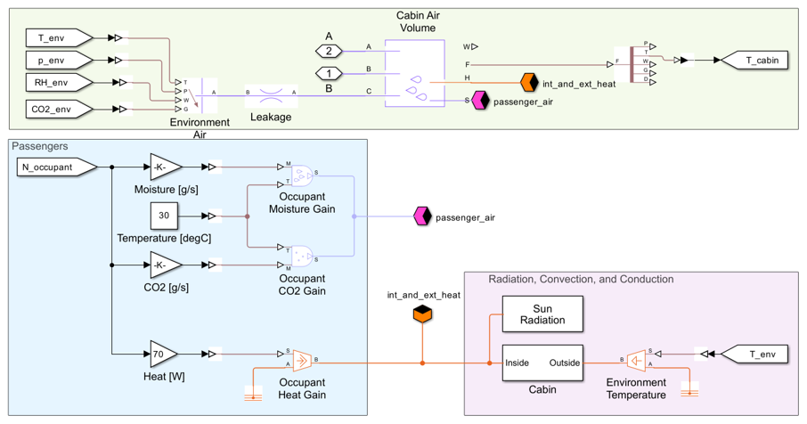
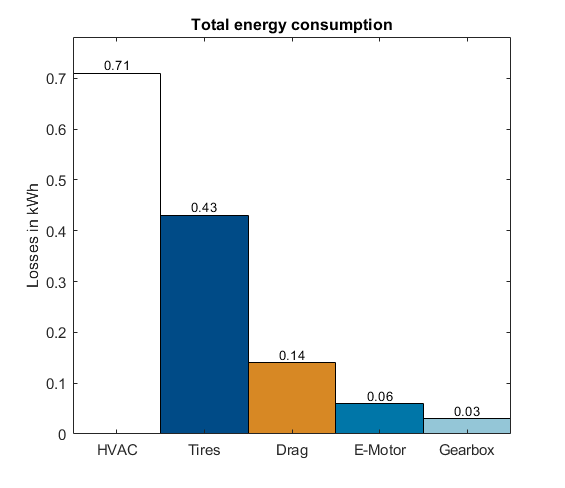
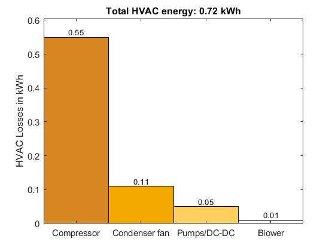
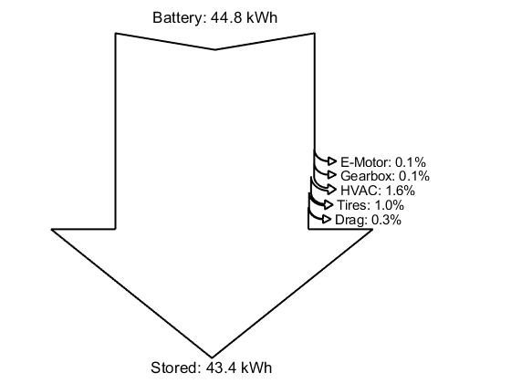
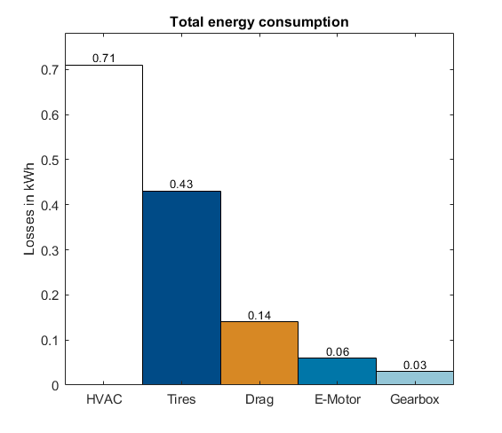
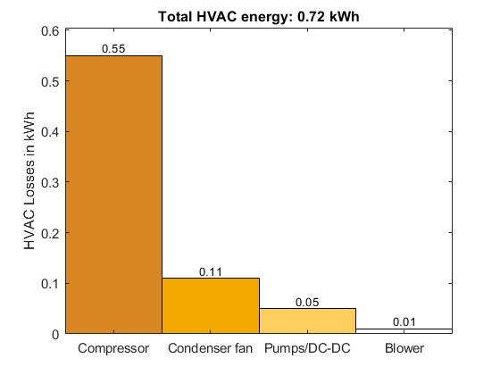
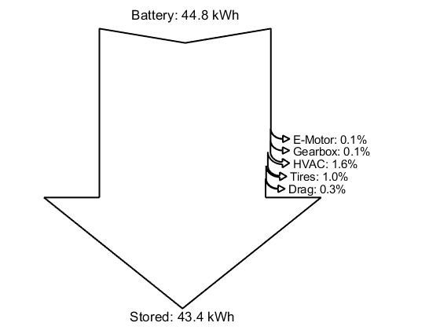

Battery Electric Vehicle Thermal Management System
This example models a battery electric vehicle (BEV) with a thermal management system. This virtual vehicle is parameterized to represent a mid-size sedan with rear wheel drive.
The design is composed of five systems:
- Electric Powertrain (battery, charger, and motor)
- Driveline (tires and chassis)
- Refrigerant Cycle (compressor, chiller, and condenser)
- Coolant Cycle (radiator, valves)
- Cabin Cycle (blower, evaporator, PTC)
The model can be easily adjusted to simulate different vehicle types, such as small city cars or SUVs, with minimal modifications and parameter adjustments.
Contents
Model
Electric Powertrain: Battery
The battery consists of 3072 cylindrical cells (21700 format) in a 96s32p electrical scheme, with a total energy of ~50 kWh when fully charged. It is modeled with Simscape Battery using an electrothermal model. The electrical model monitors the State of Charge (SOC) of the battery, the losses, and the remaining capacity. The thermal model calculates the change in cell temperature due to electrical losses. The battery supplies current to the powertrain on the HV network and is actively cooled by a cooling plate composed of 12 parallel channels.

Electric Powertrain: Motor
The electric motor is driven by the HV network and is mechanically connected to the vehicle’s rear axle. The virtual vehicle can be easily extended to describe other powertrain architectures (e.g., front or all-wheel drive). The motor’s characteristics and losses are modeled with efficiency maps. Its temperature depends upon the electrical losses and its thermal mass. To transmit the torque to the wheels, the motor is coupled with a gearbox with a constant transmission ratio. The gearbox losses are modeled with a constant efficiency.
DC-DC Converter
The DC-DC converter transforms the battery’s voltage (~380 V) to a lower voltage level (12 V) and supplies the LV components (pumps, blower, and condenser fan). Electrical losses are accounted for with a constant efficiency. A thermal model calculates the temperature change based on the DC-DC thermal mass and its electrical losses.

Driveline
The driveline includes tires and vehicle body. The tire models account for rolling resistance, inertia, and slip. The vehicle body model calculates drag, wind, and road incline losses. The vehicle body also accounts for the impact of the vehicle's mass on acceleration behavior.

Refrigerant cycle
The refrigerant cycle comprises compressor, condenser, chiller expansion valve (EV1), evaporator expansion value (EV2), chiller, and evaporator. More information regarding the refrigerant cycle is available at [2]. The refrigerant flow is driven by the compressor, which is connected to the HV electrical network. The refrigerant flow continues to the condenser where heat is dissipated to the air. The air flow within the condenser is driven by the vehicle speed the condenser fan. Latter is connected to the LV network. The refrigerant then flows through EV1 and EV2 and continues to chiller and evaporator. In the chiller, the refrigerant absorbs heat from the coolant cycle. In the evaporator the refrigerant absorbs heat from the cabin air and continues its way back to the compressor. The figure below shows the main component of the compressor subsystem:
Cabin cycle
The cabin cycle comprises cabin, blower, Positive Temperature Coefficient Heater (PTC), and evaporator. More information to this regard is available at [2]. The cabin subsystem models the thermal resistances between interior and external environment (considering the convection and conduction through doors, roof, and widows). Additionally, the model also accounts for the radiation heat entering the cabin. The blower drives the airflow in the cabin and is supplied by the LV network. The air from the blower passes through the evaporator where it can dissipate its heat to the refrigerant. If cabin heating is required, the PTC is activated and heats up the air entering the cabin. Otherwise, the PTC remains turned off. The figure below shows the cabin model:
Coolant cycle
The coolant cycle comprises motor pump (P1), battery pump (P2), radiator, radiator bypass valve, heater, chiller bypass valve, and four-way valve. This cycle cools down the electric powertrain components. More information to this regard is available at [2]. The pumps P1 and P2 drive the coolant flow and are supplied by the LV network. In the radiator, the coolant dissipates heat to the neighboring air (driven by the fan and the moving vehicle). If the outer temperature is lower than 20°C, the radiator is bypassed. If the battery reaches a temperature below 5°C, the heater is activated (supplied by HV current) and heats up the coolant. If the battery reaches a temperature below 30°C the chiller is bypassed via the chiller bypass valve. Finally, the four-way valve can switch between a parallel and a serial cooling strategy based on the environmental conditions and the temperatures of the powertrain components. In serial mode (A connected to B, C connected to D), the battery coolant cycle is connected to the motor coolant cycle. In parallel mode (A connected to D, B connected to C), the two coolant cycles are separated and operate with their own coolant tanks and pumps. The figure below shows the battery pump (P2)

Scenarios
The thermal management system is tested in a drive cycle. The vehicle follows a given speed profile over time by following the commands given by a driver controller. There are three possible drive cycles:
- Summer: In the summer scenario the outer temperature is set to 40°C and the vehicle drives an urban cycle (low speed and several stops)
- Winter: In the winter scenario the outer temperature is set to 5°C and the vehicle drives a highway cycle (high speed and no stop)
- Highway with Charging Stops: A highway cycle in summer with two charging stops and a total length of 600 km
The first two cycles are implemented for the sensitivity and optimization workflow presented in the next sections. The drive cycle are set in the Scenario subsystem: The drive cycles are loaded as a variable containing the speed over time profile of the vehicle. The cycles will use different components. For example, components like Evaporator, Condenser, Chiller are used only in summer. On the other hand, component such as the heater and the PTC heater are needed only in winter. The figure below shows the drive cycle that is used for the Summer scenario:

Postprocessing
The function calcVehicleEnergy calculates the energy losses. The results of this function call can be plotted by using the plotting functions plotEnergySankey, plotHVACEnergy, and plotVehicleEnergy The plot below show a typical output of the model
   
   Sensitivity Analysis Workflow
This repository contains the workflows for performing sensitivity analysis on the model. The analysis is divided into two primary workflows:
- Single Parameter Sensitivity
- Multiple Parameter Sensitivity
The Single Parameter Sensitivity evaluates the impact of a single parameter on the entire model. It helps identify how specific interdependencies are affected by that parameter. The Multiple Parameters Sensitivity assesses simultaneous variation of multiple parameters to understand how the several parameters collectively impact a certain objective For both types of sensitivity analysis, the impact of the parameter variation is assessed based on two key objectives:
- Consumption: The overall vehicle consumption in the summer of in the winter cycle.
- Battery Time: The time required for the battery to reach a "safe temperature zone", ensuring it is neither too hot nor too cold. This variable indicates thermal management performance.
Single Sensitivity
The single sensitivity analysis tests the impact of individual parameters on various variables. The parameters considered include:
- Plate pipe radius, see script sensitivityPlate
- Heater and PTC power, see script sensitivityHeater
- Chiller radius, see script sensitivityChiller
- Evaporator and condenser length, see script sensitivityCondenser
- Gearbox ratio, see script sensitivityTransmission
Each parameter has a dedicated script for sensitivity analysis. The scripts perform the analysis for specific scenarios (e.g., winter or summer) and display results using various plots.
Global Sensitivity
Global sensitivity analysis requires Simulink Design Optimization. This workflow simultaneously alters all the parameters mentioned in the previous section. The implementation is documented in the script sensitivityGlobal.
The results can be represented with the function postproSensitivity.m. Provided that a parallel computing toolbox is available, the sensitivity analysis can also be parallelized to save time.
Optimization
This project includes an optimization workflow using surrogateopt to minimize vehicle consumption by varying specific parameters. The goal is to optimize the following parameters:
- Plate pipe radius
- Heater and PTC power
- Chiller radius
- Evaporator and condenser length
- Gearbox ratio
The optimization seeks to minimize the combined consumption of the vehicle, which includes both summer and winter scenarios. Given the difference in magnitude between these scenarios, they are scaled before being combined. The objective function is defined as:
F(x) = s1 * consumption_winter + s2 * consumption_summer
Where s1 and s2 are scaling factors.
The optimization process ensures that the following constraints are met:
- The cabin must reach the target temperature within 12 minutes.
- The battery must reach the target temperature within 10 minutes.
To explore the implementation details of the optimization, refer to the script surrOptBEV. If a Parallel Computing toolbox is available, the optimization can be parallelized using the function surrOptBEVParallel. For post processing the results, you can use the function postproOptim.m.